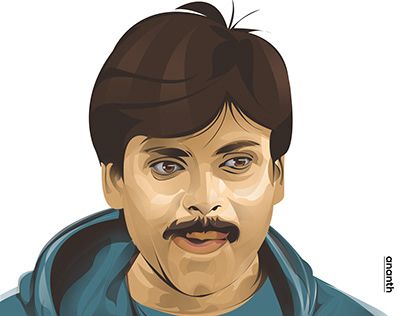

Konidela Kalyan Babu
| Governer | S.Abdul Nazeer |
| Preceded by | Dorababu pendem |
| Constitutency | Pithapuram |
| Born | 2 September 1968 (age 55) Bapatla, Andhra Pradesh,India |
| Political party | Jana Sena Party(2014-present) |
| Party Symbol | |
| Wife |
|
| childrens | 4 |
| other Name | Power star |
| Occupation | Actor-Politician-Flimmaker |